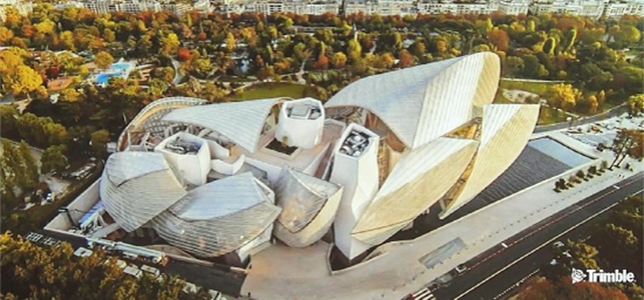
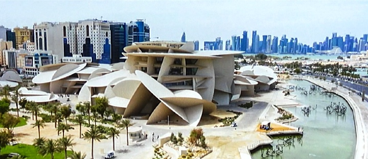
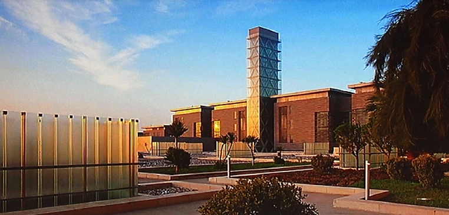
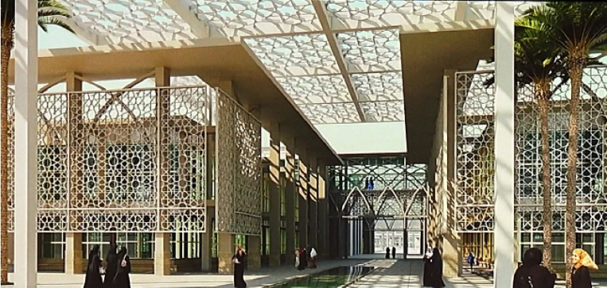

blog > 2ieme edition > Nassim Saoud
CONVERGENCE DES MONDES NUMÉRIQUE ET PHYSIQUE DANS LES PROJETS COMPLEXES
Nassim Saoud commence par présenter le groupe Trimble, fondé il y a plus de 40 ans et actif dans l'agriculture, le transport, la logistique et la construction. L’innovation et dans l’ADN du groupe avec 500 millions investis tous les ans en recherche et développement et 2000 brevets déposés dont 360 dans le domaine de la construction. Le groupe Trimble croise différentes dimensions du hardware, du software et des services.
Nassim Saoud présente ensuite les trois actes autours desquels, Trimble intervient : l'acte de concevoir, l'acte de construire et l'acte de gérer. Toutes ces interventions consistent notamment à générer et à gérer des datas avec un voyage bidirectionnel constant entre le monde physique et le monde digital. Pour cela, Trimble développe des applications web et desktop, des applications mobile et tablette, des applications chantier qui permettent le dialogue entre l’homme et les machines (robots, engins...) et également des applications de réalité augmentée et de réalité mixte permettant d’utiliser les maquettes à l’échelle un pour un directement sur le terrain lors de la construction.
Nassim Saoud revient sur l’histoire de Trimble Consulting, initialement le cabinet Gehry Partner R&D de l’architecte Frank Gehry créé en 1990. Nassim nous parle de 3 projets emblématiques :
- le Barcelona Fish à Barcelone en 1992 qui est le premier projet conçu digitalement mais aussi fabriqué en partie grâce au modèle numérique,
- le musée Guggenheim à Bilbao (1997) qui a permis de pousser les limites du digital pour la conception
- le Walt Disney Concert Hall à Los Angeles (2002) qui est le premier projet qui introduit le MEP (Mechanical Electrical Plumbing) dans la conception 3D en plus de l’architecture.
En 2002, Gehry Partner R&D devient Gehry Technologies, une société de conseils et de services et obtient 3 prix internationaux BIM (AIA International BIM Award) pour leur gestion intégrée globale de la construction : le One Island East, une tour résidentielle à Hongkong en 2007, la Fondation Louis Vuitton à Paris en 2012 et le Shangaï Disneyland en 2014. En 2018, Gehry Technologies devient Trimble Consulting après une acquisition par le groupe Trimble.
GENÈVE ✈️ PARIS : la Fondation Louis Vuitton
Nassim Saoud démarre ensuite un voyage autour de différents projets dans le monde, il commence par Paris et la Fondation Louis Vuitton, un projet emblématique et novateur à l’origine d'une trentaine de brevets. La complexité du projet et les contraintes du nombre d’intervenants répartis sur 12 fuseaux horaires différents ont obligé à mettre en œuvre des solutions web d’échanges de données. C’est ce qui deviendra plus tard, Trimble Connect utilisé aujourd’hui par 20 millions de personnes dans le monde. La fondation Louis Vuitton a été un accélérateur de projets de recherches technologiques. La structure du bâtiment est d'une très grande complexité et elle est composée de nombreux matériaux. Les voiles sont constituées de 3500 panneaux uniques à double courbure. Le challenge ici est de répondre à une architecture non standard en respectant les contraintes de budget, du planning et les exigences de qualité.
La solution utilisée a été le generative design, dans la modélisation de ce projet complexe, il ne s’agit pas de modéliser les objets mais de modéliser, les règles qui vont générer des composants intelligents qui s’adaptent à leur contexte.
Cette solution a permis de générer les 3500 panneaux de verre à doubles courbures mais également les connexions mécaniques entre eux avec un, deux, trois, quatre, cinq ou six nœuds selon leur emplacement. Le monde numérique a permis de réaliser des simulations de la construction selon le planning, d’injecter des propriétés, des matériaux dans les objets de la maquette et d’organiser l’usage des engins pendant la construction. Les maquettes numériques ont été également utilisées pour gérer la fabrication des différents composants, leur acheminement sur le chantier et leur mise en œuvre.
PARIS ✈️ DOHA : le Musée National du Qatar
Le voyage se poursuit à Doha au Qatar pour le projet du Musée National du Qatar conçu par Jean Nouvel.
L’environnement du projet comprend beaucoup de contraintes et Jean Nouvel a créé une architecture qui s’y adapte parfaitement, en forme de roses des sables. L’utilisation de la technologie a permis de mettre en œuvre ce design complexe. Des bases de données numériques s’adaptant à chaque phase du projet, aux étapes du chantier ont été déployées pour gérer la data de façon multiscalaire c’est à dire dans sa globalité et jusqu’à l’infiniment petit. Le numérique permet de gérer la constructibilité des enveloppes, des structures mécaniques, des systèmes du bâtiment et de jouer des séquences de mises en œuvre et d’assemblage de tous ces éléments dans cette architecture complexe où tous les murs sont courbes et obliques. Nassim Saoud souligne que chaque projet est l’occasion de repousser les limites du possible en exploitant les évolutions technologiques et en bénéficiant des réalisations précédentes avec une recherche d’excellence toujours grandissante.
DOHA ✈️ JEDDAH : la Kaust Solar Tower
La troisième étape du voyage se trouve en Arabie Saoudite, tout d’abord à Jeddah, pour le projet d’une tour la Kaust Solar Tower dans l’université des sciences et technologies du Roi Abdullah. Ce chantier d’université comprend plus d’un million de mètres carrés, il a été réalisé en 30 mois ce qui représente un record.
Nassim Saoud a travaillé sur un objet d'innovation au sein de cette université, une tour solaire. Dans un contexte climatique contraignant avec des températures qui montent à 55°C, il s’agissait de permettre à des chercheurs de différents laboratoires et différents bâtiments de l’université de se rencontrer dans des univers qui ne sont pas ultra climatisés. La tour est pensée comme une cheminée, elle utilise des systèmes passifs et les flux d’air pour atteindre la performance énergétique attendue. Le projet est très complexe et contient des pièces mécano-soudées enrobées dans du béton préfabriqué, la tolérance d’écarts entre le bas et le haut de la tour était de huit millimètres. La construction s’est faite hors site et a été assemblée sur place en quatre mois. Le guide d’assemblage était un livret au format A5 pouvant s’apparenter à un plan de montage d’un jeu de Lego ou à une notice de construction d’un meuble Ikea. La simplicité d’assemblage et l’anticipation des différents problèmes pouvant survenir pendant le chantier ont permis de tenir les délais ultra-agressifs du planning de ce projet.
JEDDAH ✈️ RIYADH : le Princess Nora University
Nous restons en Arabie Saoudite pour finir ce voyage, cette fois-ci à Riyadh, pour le projet Princess Nora University qui est plus qu’une université, c’est une ville pouvant accueillir 60’000 étudiants. Ce programme ambitieux a nécessité de penser le projet comme une industrie massive et non comme des constructions classiques. Une collaboration a été nécessaire avec des personnes issues de l’industrie pour notamment la fabrication des kilomètres de façades complexes.
Nassim Saoud conseille d’être curieux des méthodes et des processus des autres industries (automobile, aéronautique etc.) car ils peuvent, de plus en plus, être transposés au monde de la construction.
partagez sur
A lire egalement

Smart City : gestion intelligente des villes
Par Ahmed Riad Sbartaï